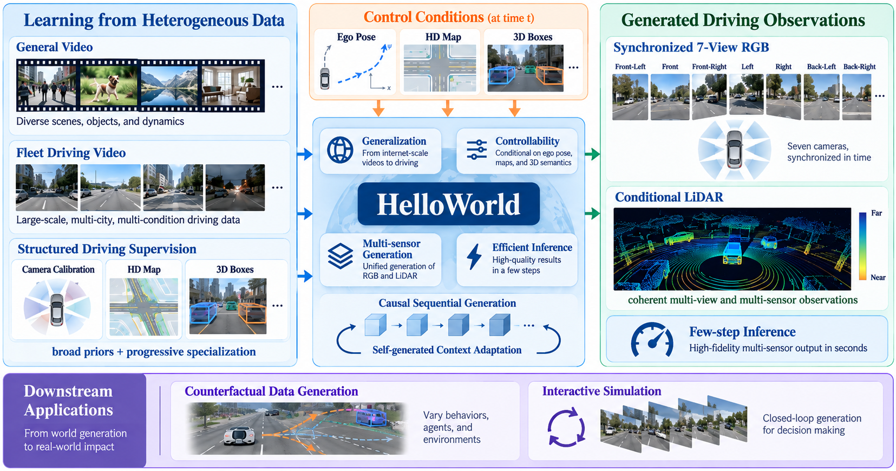
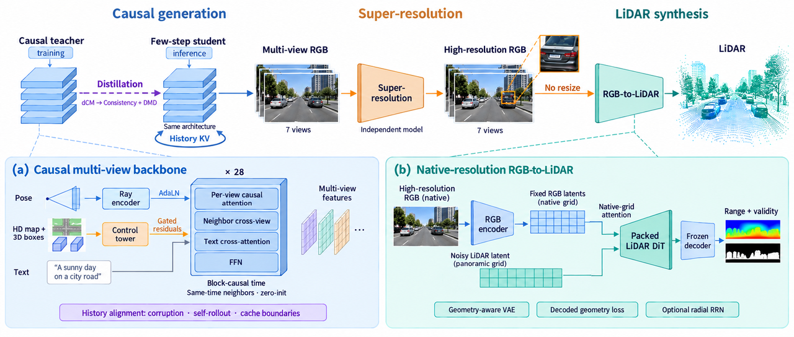

HelloWorld
Towards Practical Applications
of Driving World Models
- Multimodal Video + LiDAR
- Multi-view
- Strong Pose Control
- Layout Control 3D Boxes + Maps + Traffic Lights
- Causal DiT
HelloWorld as a Data Generalizer
HelloWorld as a Closed-Loop Simulator
Model Overview
HelloWorld combines controllable multi-view video generation, few-step inference, super-resolution, and RGB-conditioned LiDAR synthesis in a unified driving world model system.


| Setting | Rot (°) ↓ | Trans ↓ | Trans* (m) ↓ | VBench mean | CSE (px) ↓ | ΔCSE (px) ↓ |
|---|---|---|---|---|---|---|
| Cosmos Transfer 2.5 · with first frame | 5.534 | 1.880 | 8.886 | 0.7722 | 6.549 | +4.819 |
| Stage 2 · with first frame | 3.315 | 1.525 | 4.486 | 0.7882 | 6.192 | +4.462 |
| Stage 2 · without first frame | 5.163 | 2.189 | 7.972 | 0.7791 | 7.509 | +5.779 |
| Stage 3 · with first frame | 2.027 | 1.352 | 4.904 | 0.7754 | 4.180 | +2.450 |
| Stage 3 · without first frame | 3.334 | 1.844 | 8.485 | 0.7901 | 4.892 | +3.162 |
Aggregate benchmark results; not scores for the individual demos. GT CSE: 1.730 px. VBench mean summarizes six raw scores, including dynamic degree. Report · Tables 7–9 ↗
| Method | AR | Multi-view | Dense-supervision-free | FID ↓ | FVD ↓ |
|---|---|---|---|---|---|
| DrivingWorld | No | No | Yes | 7.40 | 90.90 |
| Vista | No | No | Yes | 6.90 | 89.40 |
| UniScene | No | Yes | No | 6.45 | 71.94 |
| DiST-4D | No | Yes | No | 7.40 | 25.55 |
| OmniNWM | No | Yes | No | 5.45 | 23.63 |
| FAR-Drive | Yes | Yes | Yes | 11.92 | 82.78 |
| HelloWorld | Yes | Yes | Yes | 7.75 | 41.08 |
Selected video-generation rows from Table 10; AR means autoregressive. Methods differ in output format and supervision. These distributional benchmark scores are not per-demo measurements. Values follow the table; the accompanying draft prose still contains placeholders. Report · Table 10 ↗
Pose Control
These demos prioritize adherence to the prescribed pose trajectory, even when it leads to collisions with barriers or off-road motion. Simulating such extreme trajectories supports closed-loop stress testing and the analysis of driving-policy failure modes.
Turn left · 7 views · 81 frames · 10 fps · 8.1 s. Paired with Straight and Turn right using the same scene and initial frame. Green: projected future pose trajectory.
| Method | Rot ↓ | Trans ↓ | Trans* (m) ↓ |
|---|---|---|---|
| HY-WorldPlay | 8.6305 | 1.0669 | — |
| Lingbot World 2.0 | 3.2310 | 0.2853 | — |
| HelloWorld | 2.0620 | 0.2570 | 0.6830 |
| Method | Rot ↓ | Trans ↓ | Trans* (m) ↓ |
|---|---|---|---|
| HY-WorldPlay | 15.0835 | 5.4504 | — |
| Lingbot World 2.0 | 5.4169 | 1.4988 | — |
| HelloWorld | 2.7056 | 1.3997 | 5.5857 |
Rot and Trans use Sim(3) alignment. Trans* is reported only for HelloWorld on real-world on-road vehicle cases; “—” means not reported. Single-view benchmarks on 29- and 100-frame sequences; the seven-view demos above are separate qualitative examples, not the evaluated clips. Report · Tables 3–4 ↗
Single-view perceptual quality (VBench)
| Method | Subject | Background | Motion | Dynamic | Aesthetic | Imaging | I2V subject | I2V background | Mean |
|---|---|---|---|---|---|---|---|---|---|
| HY-WorldPlay | 0.9669 | 0.9543 | 0.9933 | 0.2800 | 0.4762 | 0.5774 | 0.9829 | 0.9847 | 0.7770 |
| Lingbot World 2.0 | 0.9150 | 0.9424 | 0.9760 | 0.8900 | 0.4819 | 0.5933 | 0.9623 | 0.9676 | 0.8411 |
| HelloWorld | 0.9148 | 0.9364 | 0.9807 | 0.9200 | 0.4521 | 0.5392 | 0.9563 | 0.9632 | 0.8328 |
Eight raw-score dimensions; Mean is their unweighted arithmetic mean. This is a single-view benchmark, separate from the seven-view demos and six-dimension multiview mean. Report · Table 5 ↗
| Method | Subject | Background | Motion | Dynamic | Aesthetic | Imaging | I2V subject | I2V background | Mean |
|---|---|---|---|---|---|---|---|---|---|
| HY-WorldPlay | 0.9354 | 0.9325 | 0.9951 | 0.1400 | 0.4685 | 0.5584 | 0.9844 | 0.9855 | 0.7500 |
| Lingbot World 2.0 | 0.8841 | 0.9270 | 0.9814 | 0.9900 | 0.4489 | 0.5816 | 0.9573 | 0.9624 | 0.8416 |
| HelloWorld | 0.8876 | 0.9288 | 0.9842 | 0.9200 | 0.4453 | 0.4976 | 0.9571 | 0.9627 | 0.8229 |
Eight raw-score dimensions; Mean is their unweighted arithmetic mean. This is a single-view benchmark, separate from the seven-view demos and six-dimension multiview mean. Report · Table 6 ↗
Layout Editing
HD maps and 3D boxes provide structured control over road layouts and object placement. The examples below currently show generated RGB previews; recordings of the layout-editing process will follow.
Generated RGB placeholder · Intersection. Layout-editing process recording pending.
RGB-to-LiDAR Generation
The model generates LiDAR conditioned on RGB observations. The RGB video on the left and the interactive point cloud on the right show the corresponding input and output over time.
RGB video
Front wide camera
LiDAR point cloud
Distance color · drag to rotate
Front wide beside the generated cloud · 63 frames, 10 fps, 6.3 s. Color is distance from 5 to 28 m. Drag to rotate, scroll to zoom. All finite returns are drawn; point count varies by frame and case. Download sunset sample PLY ↗
| Metric | Generator | + Single-frame RRN | + Temporal RRN |
|---|---|---|---|
| Range MAE (m) ↓ | 2.2797 | 2.2532 | 2.2194 |
| Chamfer distance (m) ↓ | 1.0738 | 1.1038 | 1.0920 |
| F-score at 1 m ↑ | 0.8637 | 0.8565 | 0.8578 |
| Edge CD (m) ↓ | 1.6219 | 1.6989 | 1.6976 |
| Edge Pred→GT (m) ↓ | 0.8814 | 0.8339 | 0.7990 |
| Edge GT→Pred (m) ↓ | 0.7405 | 0.8651 | 0.8987 |
| Kernel MMD² (×10⁴) ↓ | 0.3627 | 0.2957 | 0.2489 |
| BEV JS distance ↓ | 0.05754 | 0.05741 | 0.05656 |
| Ray-Align ↓ | 0.4366 | 0.3238 | 0.2822 |
| Static-Align ↑ | 0.6741 | 0.7081 | 0.8310 |
35 sampling steps; all three settings reuse the same generated predictions. RRN denotes range rectification. Chamfer uses unsquared distances. Temporal RRN improves range and structural metrics, with a coverage trade-off: Chamfer and F-score remain worse than the unrectified generator. Static-Align uses reference-motion-assisted transforms. The six interactive examples use temporal RRN and 63-frame sequences; this table evaluates 100 separate 29-frame clips. It is not a per-case score or a VAE reconstruction benchmark. Report · Tables 17, 19 ↗
| Metric | Cosmos1 | HelloWorld | + Temporal RRN |
|---|---|---|---|
| Range MAE (m) ↓ | 6.1724 | 2.2199 | 2.1629 |
| Chamfer distance (m) ↓ | 2.5709 | 1.0134 | 1.0426 |
| Edge Pred→GT (m) ↓ | 1.5802 | 0.7976 | 0.7115 |
| Ray-Align ↓ | 0.3776 | 0.4245 | 0.2757 |
| Static-Align ↑ | 0.4503 | 0.6928 | 0.8463 |
100 clips, frames 0–28; all methods are scored within the same front-wide / left-rear / right-rear camera region. HelloWorld still uses seven-camera video input; Cosmos1 uses three cameras per frame. A shared scoring region does not equalize input information or training. Do not mix these values with full-panorama scores. Alignment scores are fractions. Report · Table 15 ↗
LiDAR reconstruction results
| Metric | VAE | + Single-frame RRN | + Temporal RRN |
|---|---|---|---|
| Range MAE (m) ↓ | 0.3981 | 0.3839 | 0.3775 |
| Chamfer distance (m) ↓ | 0.3978 | 0.3815 | 0.3695 |
| Edge Pred→GT (m) ↓ | 0.2997 | 0.2331 | 0.2106 |
| Ray-Align ↓ | 0.2967 | 0.2610 | 0.2589 |
| Static-Align ↑ | 0.8215 | 0.8510 | 0.8974 |
| Warp Chamfer (m) ↓ | 0.4668 | 0.4422 | 0.3668 |
Reconstruction of recorded LiDAR, not RGB-conditioned generation. Temporal metrics use recorded poses. All arms share the evaluation windows, but the rectifiers are separately trained recipes. Full coverage diagnostics are in Table 18, page 45. Report · Table 16 ↗
Few-Step Distillation
Compare the 20-step teacher on the left with the 4-step DMD student on the right. Shared playback controls align the two sequences for visual comparison of the few-step results.
Teacher 20 steps
DMD 4 steps
Left turn · Teacher 20 steps (left) / DMD 4 steps (right) · 7 views each · 10 fps · 6.1 s. Synchronized playback.
| Setting | Rot (°) ↓ | Trans ↓ | Trans* (m) ↓ | CSE (px) ↓ | Imaging quality ↑ | Motion smoothness ↑ | VBench mean |
|---|---|---|---|---|---|---|---|
| Baseline · with first frame | 2.027 | 1.352 | 4.904 | 4.180 | 0.4456 | 0.9876 | 0.7754 |
| DMD · with first frame | 1.661 | 0.688 | 1.885 | 3.510 | 0.5039 | 0.9829 | 0.7906 |
| Baseline · without first frame | 3.334 | 1.844 | 8.485 | 4.892 | 0.5074 | 0.9788 | 0.7901 |
| DMD · without first frame | 2.311 | 1.034 | 3.193 | 4.223 | 0.4935 | 0.9826 | 0.7938 |
Aggregate results from the report. The clips above are a separate 6.1-second seven-view comparison and are not the source of these numbers. Rot and Trans use Sim(3) alignment; Trans* measures metric-scale translation. VBench mean includes dynamic degree. DMD improves the reported pose and CSE metrics; perceptual changes vary by metric and initialization. Report · Tables 11–13 ↗
| Model | Steps | CFG | DiT forwards | Sampling (s) ↓ | End-to-end (s) ↓ | Allocated (GiB) | Device (GiB) |
|---|---|---|---|---|---|---|---|
| RF teacher | 20 | 3 | 320 | 370.1 | 502.2 | 68.4 | 95.1 |
| DMD student | 4 | 1 | 32 | 87.5 | 286.1 | 68.6 | 94.6 |
Reported sampling speedup: 4.23×; end-to-end speedup: 1.76×; DiT forward count reduced 10×. End-to-end includes loading, VAE decoding and writing videos. Allocated memory is per rank; device memory is the nvidia-smi peak. These are the report’s measured run costs, not browser playback latency or a real-time claim. Report · Table 14 ↗
Environment Control
Weather and lighting conditions guide the appearance of the generated driving scene. Compare seven-view results under rain, snow, fog, and different times of day.
Seven views in one clip · same boulevard clip · 10 fps · 10.1 s. A driving scene under clear blue skies, with bright sunlight and crisp shadows.
Special-Scenario Generation
Targeted scene descriptions guide the generation of scenarios such as road construction, pedestrian crossings, and dense traffic. Each example presents the scene across seven camera views.
Seven views in one clip · 10 fps · 10.1 s. A large road construction site occupies the middle of the roadway directly ahead. A yellow tracked excavator is digging into a wide section of torn-up asphalt, its boom lowered and bucket scooping earth. Bright orange cones, red-and-white barriers, piles of soil and broken pavement clearly mark the central work zone.
Long-Horizon Generation
Autoregressive generation extends driving sequences using previously generated context. These examples allow inspection of scene consistency and motion continuity over longer rollouts.
Seven views in one clip · 10 fps · 40.1 s.
| Method | FID ↓ | FVD ↓ |
|---|---|---|
| MagicDrive-V2 | 20.91 | 94.84 |
| HorizonDrive | 13.82 | 92.99 |
| HelloWorld | 17.81 | 88.10 |
Long-horizon results from Table 10, separate from short-horizon evaluation and the three 40.1-second demos above. HelloWorld has lower FVD than these baselines, while HorizonDrive has lower FID. The report does not identify these demo clips as the evaluation set. Report · Table 10 ↗